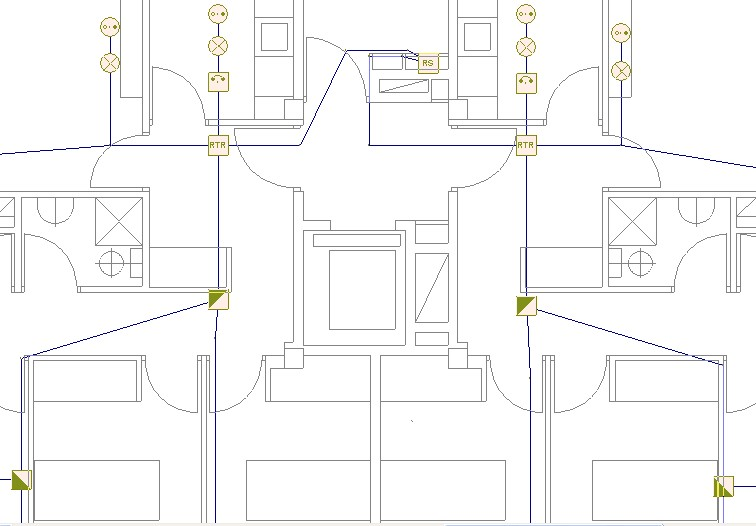
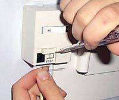
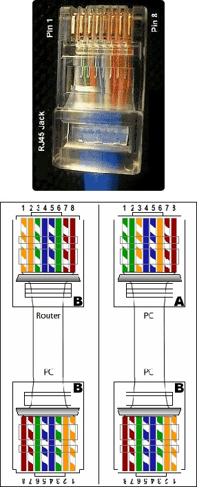
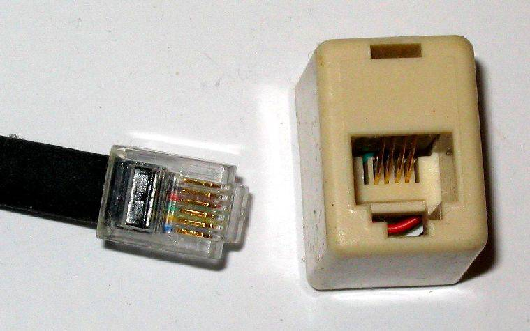

1. Instalación de telefonía.
Las Instalaciones telefónicas conectan con el exterior y también permiten efectuar conexiones internas, es decir, con teléfonos dentro del mismo edificio. Ésto es usual en los edificios de oficinas, clínicas y otros edificios que requieren no solamente comunicaciones externas.
Las Instalaciones Telefónicas en Edificios, se realizan mediante las canalizaciones para la red telefónica desde la acometida de la compañía que suministra el servicio hasta cada toma.

Acometida y Distribución
La acometida general puede ser aérea o subterránea, según la constitución de la red telefónica urbana y las características del edificio en particular.
La empresa acudirá a la vivienda y realizará las operaciones necesarias para llevar el Punto de Terminación de Red (PTR) hasta el interior del hogar.
Una vez que se tiene el PTR colocado en cualquier estancia de la casa, el siguiente paso consiste en distribuir el cable telefónico hasta las diferentes cajas.
Deben usarse exclusivamente conductores específicos para telefonía; tener en cuenta que los mismos son muy sensibles a la humedad y a las temperaturas extremas, no soportan esfuerzos mecánicos ni golpes.
La longitud mayor de un conductor no conviene que supere los 50 metros, para asegurar su buen funcionamiento, resistencia y evitar caídas de tensión en la línea.
Este sistema solo es empleado para transmisión de voz; si se desea transmitir otro tipo de señales (vídeo, datos, etc.), se utilizan otros sistemas.
Cableado Estructurado
Los sistemas de cableado estructurado sirven para satisfacer las necesidades de comunicación de todo el edificio, para efectuar comunicaciones con el exterior y también entre teléfonos internos.
Voz y Datos Digitalizados
La voz se transmite por el teléfono mediante un conjunto de señales eléctricas codificadas a través de variaciones de tensión.
Utilizando el cable adecuado, se pueden transmitir por un conductor único la voz y los datos digitalizados.
Cuando se efectúa la instalación de la red de comunicaciones de un edificio, puede hacerse que el mismo conductor sirva de modo indistinto para transmisión de voz y de datos, logrando así un sistema global donde están conectados al mismo tiempo todos los elementos del sistema de comunicaciones y todos los de datos digitalizados.
Los elementos que incluyen este sistema son los enumerados a continuación:
1. Teléfonos normales
2. Teléfonos con pantalla
3. Ordenadores personales conectados a red
4. Fax
5. Módems y dispositivos para acceso telefónico a red externa
6. Impresoras
7. Cámaras de vídeo
8. Lector óptico de barras
Centralización
Como se realiza en el sistema clásico, en cada punto de conexión se instala un cable con ocho conductores que llegan hasta el sitio de centralización. Allí se ubica un armario de conexionado donde se asigna a cada conductor la utilidad que tendrá.
Los que se asignen como teléfonos, se conectarán a la centralita; los que se asignen como conexiones a la red de ordenadores, a los elementos de informática.
También se definirán los puntos de conexión de las cámaras de vídeo situadas en la entrada del edificio y otros puntos donde se requiera.
Del mismo modo, si fuese necesario, se podrá modificar la disposición de los elementos, reasignando las conexiones de una manera muy sencilla.
Puntos de Conexión, Cableado y Conductores
Los puntos de conexión están preparados para conectores de 8 puntos, de tipo RJ-45.
Son conectores más anchos que los comúnmente usados para telefonía (los de telefonía son de 2 puntos, llamados RJ-11), permiten conexiones de 2, 4, 6 y 8 puntos.
El cableado se realiza con conductores especiales de 8 cables, siendo conveniente utilizar de buena calidad y que permitan la mayor velocidad de transmisión posible.
Los conductores no pueden ser cortados ni empalmados; por ello se deben efectuar estas instalaciones con sumo cuidado y atención, verificando las bajantes, ya que de tener que hacer modificaciones, puede tornarse muy dificultoso.
Los conductores de señal deben ir separados en distintas canalizaciones que los conductores de energía eléctrica.
Para los casos de cableado estructurado, debe cuidarse que no se produzcan interferencias debido al campo magnético que generan las líneas de corriente de 220 v y de 380 v. Cuando se disponen en canales plásticos, se colocan separadores que aíslen unos de otros.
Toda la instalación de conexionado deberá efectuarla personal especializado, respetando los códigos de color y el orden de distribución asignado.